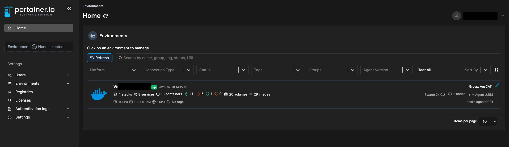
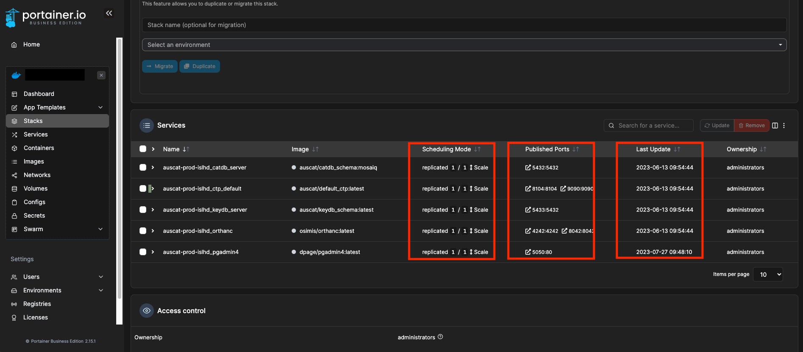

Docker & Portainer#
This document describes how to install Docker and Portainer on a host machine running Ubuntu.
Install Docker#
The Docker documentation describes in detail how to install Docker on Ubuntu: https://docs.docker.com/engine/install/ubuntu/. The Linux post-install steps should also be performed: https://docs.docker.com/engine/install/linux-postinstall/. The following commands are used to install Docker and allow the currently logged in user to execute Docker commands without sudo privileges:
Install required packages#
sudo apt-get update
sudo apt-get install \
ca-certificates \
curl \
gnupg
Add Docker’s official GPG key and setup repository#
sudo mkdir -m 0755 -p /etc/apt/keyrings
curl -fsSL https://download.docker.com/linux/ubuntu/gpg | sudo gpg --dearmor -o /etc/apt/keyrings/docker.gpg
echo \
"deb [arch="$(dpkg --print-architecture)" signed-by=/etc/apt/keyrings/docker.gpg] https://download.docker.com/linux/ubuntu \
"$(. /etc/os-release && echo "$VERSION_CODENAME")" stable" | \
sudo tee /etc/apt/sources.list.d/docker.list > /dev/null
Install Docker Engine#
sudo apt-get update
sudo apt-get install docker-ce docker-ce-cli containerd.io docker-buildx-plugin docker-compose-plugin
Add User to Docker Group#
sudo groupadd docker
sudo usermod -aG docker $USER
newgrp docker
Test Docker Installation by running Hello-world image#
docker run hello-world
Once Docker is successfully installed, initialise a swarm which will be used in the next step:
docker swarm init
If you’re using a NECTAR VM with multiple IP addresses assigned, use the following command instead and replace VM_IP_ADDRESS with the main IP address you use to connect:
docker swarm init --advertise-addr VM_IP_ADDRESS
Install Portainer#
Portainer provides a web-interface to manage your Docker instance. It isn’t essential but it eases the deployment process. Ensure you deploy Portainer within Docker swarm to enable additional features for service deployment. Detailed instructions can be found here: https://docs.portainer.io/start/install-ce/server/swarm/linux.
Fetch Portainer Stack#
curl -L https://downloads.portainer.io/ce2-17/portainer-agent-stack.yml -o portainer-agent-stack.yml
Deploy Portainer#
docker stack deploy -c portainer-agent-stack.yml portainer
Once deployed (and running, confirm with docker ps command), navigate to the Portainer dashboard in your web browser:
http://your-vm-ip:9000
You will be prompted to create a user account the first time you visit this dashboard. Ensure you set this immediately after deploying Portainer to avoid a timeout.
Add AusCAT Docker Registry#
Next you will need add the DockerHub registry token to Portainer so that you can fetch the required AusCAT images. Navigate to Registries in the left menu and click Add Registry. Enter the credentials and token you obtained from the AusCAT team:

Test out pulling an image by navigating to Home. Then select the Primary environment and choose Images from the left menu. Try to pull the auscat/default_ctp:latest (or any other AusCAT image) from the registry you added. Confirm that the image was pulled successfully.

Troubleshooting#
Problem: Portainer is blocking setting a password due to a timeout.
Solution: For security reasons you must set your password immediately after deploying Portainer (Within approximately 2 minutes). If you’ve missing this Window, restart the portainer container by running the docker ps command, finding the name of the portainer_portainer container and then running the command docker restart [portainer_portainer.container.name].